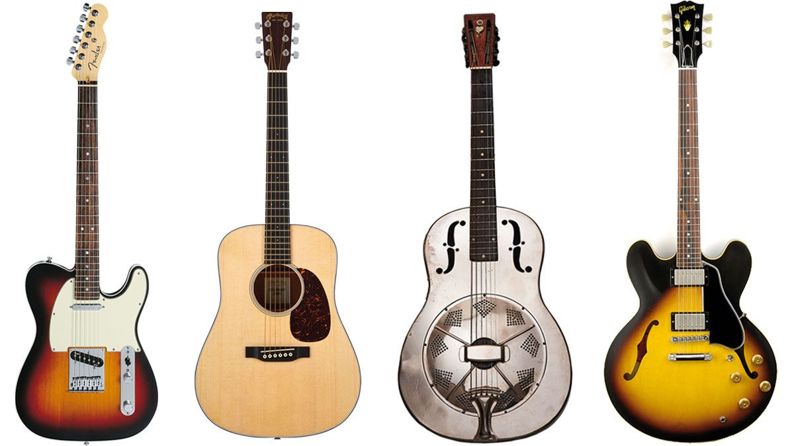

The guitar is a fretted musical instrument that usually has six strings. It is typically played with both hands by strumming or plucking the strings with either a guitar pick or the fingers/fingernails of one hand, while simultaneously fretting (pressing the strings against the frets) with the fingers of the other hand. The sound of the vibrating strings is projected either acoustically, by means of the hollow chamber of the guitar (for an acoustic guitar), or through an electrical amplifier and a speaker.
The guitar is a type of chordophone, traditionally constructed from wood and strung with either gut, nylon or steel strings and distinguished from other chordophones by its construction and tuning. The modern guitar was preceded by the gittern, the vihuela, the four-course Renaissance guitar, and the five-course baroque guitar, all of which contributed to the development of the modern six-string instrument.
The modern word guitar, and its antecedents, has been applied to a wide variety of chordophones since classical times and as such causes confusion. The English word guitar, the German Gitarre, and the French guitare were all adopted from the Spanish guitarra, which comes from the Andalusian Arabic قيثارة (qīthārah) and the Latin cithara, which in turn came from the Ancient Greek κιθάρα. Kithara appears in the Bible four times (1 Cor. 14:7, Rev. 5:8, 14:2 and 15:2), and is usually translated into English as harp.
Many influences are cited as antecedents to the modern guitar. Although the development of the earliest "guitars" is lost in the history of medieval Spain, two instruments are commonly cited as their most influential predecessors, the European lute and its cousin, the four-string oud; the latter was brought to Iberia by the Moors in the 8th century.
Guitars can be divided into two broad categories, acoustic and electric guitars. Within each of these categories, there are also further sub-categories. For example, an electric guitar can be purchased in a six-string model (the most common model) or in seven- or twelve-string models.
Acoustic Guitars form several notable subcategories within the acoustic guitar group:
which include the flat-topped, or "folk", guitar; twelve-string guitars; and the arched-top guitar. The acoustic guitar group also includes unamplified guitars designed to play in different registers, such as the acoustic bass guitar, which has a similar tuning to that of the electric bass guitar.
Classical Guitars , also known as "Spanish" guitars, are typically strung with nylon strings, plucked with the fingers, played in a seated position and are used to play a diversity of musical styles including classical music. The classical guitar's wide, flat neck allows the musician to play scales, arpeggios, and certain chord forms more easily and with less adjacent string interference than on other styles of guitar. Flamenco guitars are very similar in construction, but they are associated with a more percussive tone.
Renaissance and Baroque Guitars are the ancestors of the modern classical and flamenco guitar. They are substantially smaller, more delicate in construction, and generate less volume. The strings are paired in courses as in a modern 12-string guitar, but they only have four or five courses of strings rather than six single strings normally used now.
Modern guitars can be constructed to suit both left- and right-handed players. Normally, the dominant hand (in most people, the right hand) is used to pluck or strum the strings. This is similar to the convention of the violin family of instruments where the right hand controls the bow.
Left-handed players sometimes choose an opposite-handed (mirror) instrument, although some play in a standard-handed manner, others play a standard-handed guitar reversed, and still others (for example Jimi Hendrix) played a standard-handed guitar strung in reverse. This last configuration differs from a true opposite handed guitar in that the saddle is normally angled in such a way that the bass strings are slightly longer than the treble strings to improve intonation. Reversing the strings, therefore, reverses the relative orientation of the saddle, adversely affecting intonation, although in Hendrix's case, this is believed to have been an important element in his unique sound.
Component
| Guitar in Store | |||
|---|---|---|---|
| S.N | Name | Type | Price in PHP |
| 1 | Yamaha FG800 | Acoustic | 7000 |
| 2 | Lyons Classroom | Classical | 8000 |
| 3 | Kremona Fiesta | Classical | 6500 |
| 4 | Lucero LFN200Sce | Electric | 12000 |
| 5 | Karoma | Acoustic | 4800 |
| Total items | 5 | ||